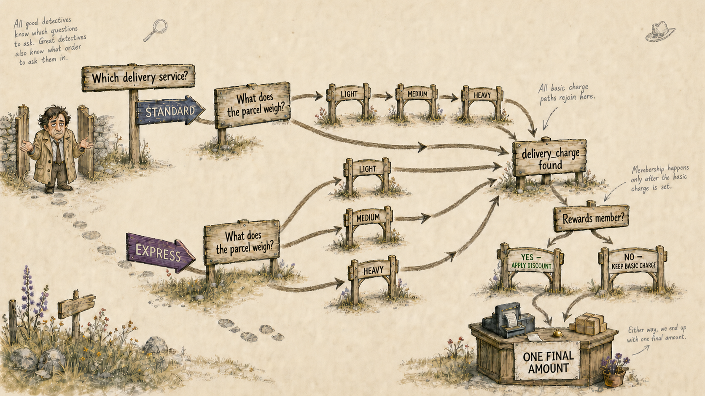
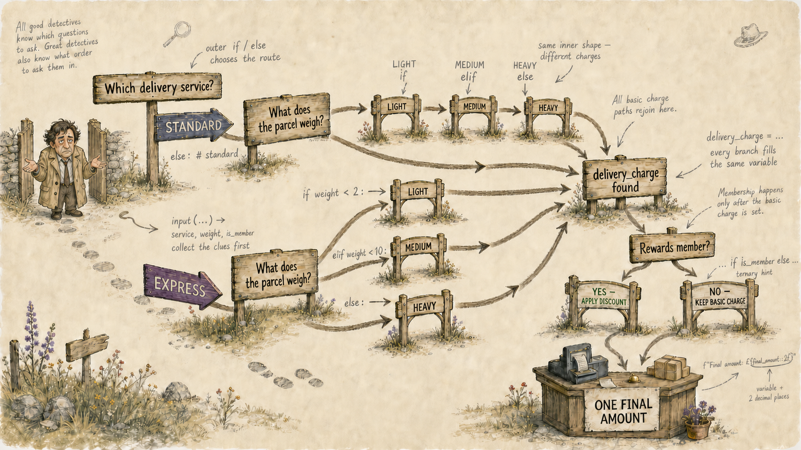

Determine the basic delivery charge
- Express: £8 under 2 kg, £12 from 2 kg to under 10 kg, £18 at 10 kg or more.
- Standard: £3 under 2 kg, £6 from 2 kg to under 10 kg, £9 at 10 kg or more.
How to investigate a multipart programming problem, find the first question, and follow one important value from the opening clues to the final answer.
Columbo never begins with the clever conclusion. He notices the facts, asks which question comes first, and keeps following the thread until every loose end belongs somewhere.
Maya runs the counter at the local parcel shop.
She offers two levels of service — express or standard.
Each service has different charges depending on parcel weight.
Reward card members get a 15% discount on all postage fees.
Maya needs one final amount to show on her till.
Members receive 15% off. Everyone else keeps the basic charge unchanged.
Do not begin by worrying about indentation, or commas, or bracket types. Begin by seeing the flow: collect the facts, determine one matching charge, then apply one later membership decision.


Read once for the story. Read again to mark every fact that can vary for the next customer. Then count and name its possible states so no branch remains hidden.
| Clue | Changing fact | Question Maya asks | How many? | Possibilities | Job in the task |
|---|---|---|---|---|---|
| 01 | Delivery type | Which service did the customer choose? | ×2 | Express; standard | Selects the correct price list. |
| 02 | Parcel weight | Which weight band contains this parcel? | ×3 | Under 2 kg; 2 kg to under 10 kg; 10 kg or more | Determines one charge within the selected list. |
| 03 | Membership | Is the customer a rewards member? | ×2 | Member; not a member Boolean | Determines whether Part B changes the charge. |
Part A must hand its result to Part B. We therefore need one consistently named place capable of carrying whichever charge the customer’s facts determine.
All six valid routes finish by establishing one basic charge.
delivery_charge
Unknown before Part A.
Known after Part A.
Receives the charge and either adjusts it or leaves it unchanged.
The variable is not six boxes for six prices. It is one labelled box. Part B does not need to know which route filled it; it only needs the value now inside.
Weight appears several times in the task, but it is not the first question. Maya cannot interpret the weight until she knows which price list applies.
delivery_charge.Express or standard decides which complete price list is relevant.
The weight band becomes meaningful only after the correct delivery route has been opened.
This is why Part A feels larger than Part B: it genuinely contains more changing facts, more possible routes and a decision nested inside another decision.
The discount applies whatever the delivery route and whatever the parcel weight. It therefore belongs after all six pricing routes have rejoined.
Build the outer delivery choice, the inner weight choices, and the dependable handoff. Do not leave Part A until every possible route establishes delivery_charge.
Ask once whether the customer is a member. Discount the carried charge or leave it alone.
Returning to the far-left margin in the eventual Python expresses this same idea: Part A’s whole express-or-standard investigation has finished, and the program is ready for something that applies to everyone.
You already understand this structure in human terms. The outline below introduces the Python decision words without filling in prices, calculations or a completed solution.
Indentation will eventually mirror this thinking. It is not decoration: it records which question you are currently inside and which route an instruction belongs to.
The goal is not to “think in Python” immediately. The goal is to investigate clearly enough that Python has something orderly to describe.Case closed—for now 😂